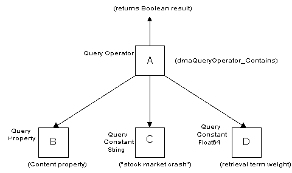
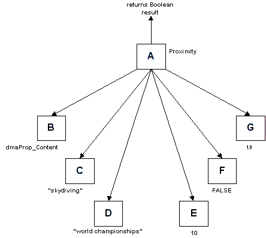
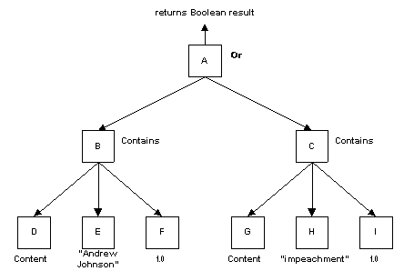

DMA Architecture Enhancement Proposal for
Content Based SearchAuthors: DMA Query SC: Mitsuru Akizawa, Yoshifumi Sato, Ann Palmer, Jim Green, Dennis Hamilton, Alan Babich
| HTML Rendition: This HTML rendition was derived from the Microsoft Word 97 file CBSearch12.doc. It might not be the latest version of the CBSearch extensions to DMA 1.0. Check the definitive sources for the latest version. There may be a later packaging of complete, current CBSearch materials there. |
Version 8.0: 6/23/99 Mitsuru Akizawa, Jim Green, Dennis Hamilton, Alan Babich
(CBSearch12.doc) Final (minor) changes before vote. State that there will be one subclass of the Content Search class for each CBR index supported by the document space.
Version 7.0: 6/23/99 Mitsuru Akizawa, Jim Green, Dennis Hamilton, Alan Babich
Put in the changes agreed to on the conference call of 5/11/99, and change the data type of Thesaurus Id from String to Id. Enhance the explanation of the default units for distance:
Put a sentence in section 3 that states explicitly that the merge rules are not changed by this proposal.
Add a new class Content Query Options to hold the content based query options. Add a single object valued property, Content Query Options, to the classes Query and Query Operator. Do not require support for this property or any of the option properties, and do not require a default value for any of the options.
The use of thesauri is on a best effort basis. The query will be executed, and no error will be returned, even if a thesaurus is not available.
In the introduction it is noted that there can be multiple instances of the Result Object property in the Selections list.
Put in an example showing the use of the Result Object property.
Version 6.0: 4/27/99 Mitsuru Akizawa, Jim Green, Dennis Hamilton, Alan Babich
Change the name of the Proximity operator to Within. Add new query operators NotWithin, WithinUnits, NotWithinUnits. Add HitCount property.
Version 5.0: 4/4/99 Mitsuru Akizawa, Jim Green, Dennis Hamilton, Alan Babich
Add example query trees. Explain how to take advantage of the new properties in the Query class. Get rid of the Word macros. Use the value 1 to indicate adjacency instead of 0. This change anticipates that an operand will be added to the Proximity operator to specify the units of . For example, if the units were specified to be "paragraph", then 0 would mean that the search terms must be in the same paragraph, and 1 would mean that the search terms must be in adjacent paragraphs. The old way, -1 would have to be used to indicate that the search terms are in the same paragraph.
Version 4.0: 2/16/99 Mitsuru Akizawa, Yoshifumi Sato, Ann Palmer, Jim Green, Dennis Hamilton, Alan Babich
Touch up the wording in the overview.
Changed the options from list of Booleans to separate properties.
Wrote the query overview.
Dropped the last Editor’s note.
Version 3.0: 1/19/99 Mitsuru Akizawa, Yoshifumi Sato, Ann Palmer, Jim Green, Alan Babich
Added a paragraph on the scope of the proposal in the introduction.
Clarified the confusion between class and class instance in the introduction.
Added Content Search to the glossary of terms.
Explained that the relative importance of two retrieval terms in a query is indicated by the ratio of their retrieval term weights.
Changed the data type of Raw Score, Normalized Score, and weights from integer32 to float64.
Moved the Special Properties to another proposal.
Made the list of options be list of integer32, not list of Boolean. Added format level "option".
Provided new name (DMA_CBR_OPTION_SPELLING_VARIANT) and new description for DMA_CBR_OPTION_TRANSLATION_EXPANSION.
Made Thesaurus name a list of strings, and enhanced its description.
Deleted the Contains SGML and SGML operators.
Rewrote the sentence on internationalization considerations.
Removed most editor’s notes.
Minor wording touch ups.
Version 2.0: 12/10/98 Mitsuru Akizawa, Yoshifumi Sato, Ann Palmer, Jim Green, Alan Babich
Added operator for searches of SGML, HTML, and XML documents. Correct the statement that the Hitachi proposal is based on STARTS. It is not. It used the concept of raw and normalized score, however. Corrected some minor errors in the document.
Version 1.0: 12/06/98 Mitsuru Akizawa, Yoshifumi Sato, Ann Palmer, Jim Green, Alan Babich
Initial version.
dmaClass_ContentSearch
dmaClass_ContentQueryOptions
DmaClass_Query
dmaClass_QueryOperator
Integration Model
Query
Query Model Overview
New Query Operators
Contains
Within
NotWithin
WithinUnits
NotWithinUnits
Internationalization/Localization
Content
Containment
Versioning
Security
Naming
Performance Impact
Failure Modes/Crash Recovery
Contains Operator
dmaProp_ResultObject
The "Within" Operator
Compound Retrieval Condition
Using the New Properties in the Query Class
The scope of this proposal is to define a small, basic, interoperable subset of content search that is to be added to the DMA API. The intent is to enable DMA query to provide access to basic content search capability, assuming that is provided by the document space implementation. This proposal is not intended to allow access to every feature of every search engine that currently exists.
A new class is added to the DMA classes – Content Search.
It is expected that the Content Search class will be supported and have exactly one subclass for each CBR index supported by the document space. It is possible for each content index to be managed by different content search engine software."
A query against the Content Search class (or one of its subclasses) implies a query against the corresponding content index.
It should be noted that documents of many different types are typically indexed in the same content index. It is also possible to include folders and annotations in the content index. Therefore, searches against the Content Search class can in effect search across multiple different subclasses of DocVersion and possibly other classes as well.
The properties of an instance of Content Search reflect properties stored in the corresponding content index. A new object valued property, Result Object, is introduced as a property of the new Content Search class. The act of accessing the value of the Result Object property of a query result row causes a connected scratch pad object for the DocVersion or other object associated with the result row to be instantiated on the client. Note that there can be multiple instances of the Result Object property in the Selections list.
The Content Search class is intended to be a virtual class: The Content Search class is intended for use only in queries. No provision is made for inserting, updating, or deleting independently persistable objects of an instance of the Content Search class via the DMA API. Indexing and deindexing of documents in a content index is expected to be done out of band of the DMA API.
New "score" properties of the Content Search class that allow the results of content based queries to be ranked in descending order of relevance are defined in this proposal.
In addition to the new Content Search class, new query operators that perform various types of content based search operations are defined in this proposal.
This proposal does not propose any changes to the merge rules for constructing merged scopes.
This proposal is based on a working paper submitted by Mr. Mitsuru Akizawa and Mr. Yoshifumi Sato of Hitachi, as modified by the subsequent discussions of the DMA Query subcommittee.
Content search is querying for documents by specifying conditions on the document content. Typically, the documents involved are parsed by special document indexing software, and indexed in a content index. The entries in the content index refer back to the original documents.
A retrieval term is word or phrase looked up in a content index by content based retrieval (CBR) software.
If there are multiple retrieval terms in a content based query, it may be desirable to indicate the relative importance of each term to the query. That is done by assigning a weight to each retrieval term. The retrieval term weight is a real number between 0.0 and 1.0 . The ratio of two retrieval term weights indicates the relative importance of the two retrieval terms. Retrieval term weights are not normalized. That is, there is no requirement that the sum of the retrieval term weights adds up to 1.0 or any other number.
The raw score is intended to be useful for ranking purposes when a single content based index is involved in a query. In some document spaces, the raw score is based on the number of occurrences of the search terms in the document, and on other statistics (e.g. the number of documents in the content index that contain the search term, the total number of documents in the content index, etc.). When multiple content indexes are involved in a query, the raw scores are typically not directly comparable, even if the same scoring algorithm is used. That is because the raw score of a document for a particular query typically depends upon all the documents in the content index. Therefore, when multiple content indexes are involved in a query, the normalized score is generally used for ranking purposes. The normalized score may not be perfectly comparable across content based indexes, but it is generally much more appropriate than the raw score in such cases.
This is a new, virtual class. Objects of this class can not be created, deleted, modified, or connected to in the usual way. It is intended that the primary use of this class be in content based queries.
Adding and deleting objects of this class is outside of the scope of this proposal. The Name property is not assigned. This class must be searchable but not addressable or navigable.
Class ID: dmaClass_ContentSearch
Superclass: DMA
Interfaces
The interfaces are inherited from the superclass DMA. These are IUnknown, IdmaObject, and IdmaProperties. However, objects of this class can not be instantiated. This class exists to provide properties that can be selected in a query result set.
Properties
Name Impl. Req'd System Gen'ed Read-Only Value Req'd Type Cardinality Req'd Class OIID - Yes Yes - String Scalar Class Description - Yes Yes - Object Scalar Class Description This - Yes Yes - Object Scalar Content Search Create Pending - Yes Yes - Boolean Scalar Update Pending - Yes Yes - Boolean Scalar Delete Pending - Yes Yes - Boolean Scalar Content Yes Yes Yes - String Scalar Result Object Yes Yes Yes - object Scalar DMA Raw Score - Yes Yes - Float64 Scalar Normalized Score - Yes Yes - Float64 Scalar Document Length - Yes Yes - Integer32 Scalar Hit Count - Yes Yes - Integer32 Scalar Detailed Description
It is useful to think of the persistent data associated with an instance of the Content Search class (or one of its subclasses) as a content index.
The properties of an instance of the Content Search class reflect the properties stored in the corresponding content index.
The Content Search class and its subclasses must be searchable. Searches against it correspond to searches against a content index.
The primary use of this class is to facilitate content queries. It is not intended that it be possible to connect scratchpad objects for members of this class or to create new persistent members of this class (e.g., via the ExecuteChange method). The intent is that indexing and deindexing of documents or other objects in the content index is done out of band with respect to the DMA API.
Search results from this class correspond to documents or other objects indexed in the content based index. A connected scratchpad object for the document or other object associated with a result row may be obtained by accessing the value of the Result Object property.
It is expected that if a document space has more than one content index, then there will be an instance of Content Search or one of its subclasses for each such content index in that document space. Different search engine software can be used to manage each content index.
Property Descriptions
• OIID {dmaProp_OIID}
Property Inherited from DMA
This property may not be implemented.
• Class Description {dmaProp_ClassDescription}
Property Inherited from DMA
This property may not be implemented.
• This {dmaProp_This}
Property Inherited from DMA
This property may not not be implemented.
• Create Pending {dmaProp_CreatePending}
Property Inherited from DMA
This property may not be implemented.
• Update Pending {dmaProp_UpdatePending}
Property Inherited from DMA
This property may not be implemented.
• Delete Pending {dmaProp_DeletePending}
Property Inherited from DMA
This property may not be implemented.
• Content {dmaProp_Content}
This property stands for the content of the document or other target object. This property is merely a placeholder needed by content search query operators. (Query operators need an operand that designates the property being queried.) There must be no value for this property (the content must be obtained by accessing the Result Object property and then using the usual DMA 1.0 methods to access its content).
• Result Object {dmaProp_ResultObject}
This object-valued property references the actual document or other object that corresponds to a query result row of a search against the Content Search class (or one of its subclasses). In order to obtain a scratchpad object for the target object, this property is mentioned in the Selections list property of the query, and its value is retrieved from a result row of the query.
• Raw Score {dmaProp_RawScore}
The value of this property is the raw score of the document, i.e., this score value is not normalized. The value of this property can be used to order the documents retrieved by a content query in order of decreasing relevance. The Raw Score is most useful when the query is against a single document space. The Raw Score property values are not comparable across document spaces: The values of Raw Score of the same document stored in two different document spaces may be different.
• Normalized Score {dmaProp_NormalizedScore}
The value of this property is the normalized score of the document. The Normalized Score can be used to order the documents retrieved by a content query in order of decreasing relevance. The Normalized Score is expected to be more useful than the Raw Score when the query is across multiple document spaces. However, although using the Normalized Score is better than using the Raw Score in the case of multiple document spaces, there is no guarantee that the normalized scores from different document spaces will be perfectly comparable.
• Document Length {dmaProp_DocumentLength}
This is the length in bytes of the rendition of the document that was indexed in the content index. This property is optionally supported.
• Hit Count {dmaProp_HitCount}
For the case that there is a single Contains operator, the value of this property is the number of occurrences of the search term in the document associated with the Result Object property. For other cases, the value of Hit Count is implementation defined. This property might be null for some content queries and non null for others.
Other Properties in the Content Based Index
It is usually the case that content search engines support the indexing of "hard" properties of documents (e.g., "Author", "Title", "LoanNumber", etc.) in addition to document content. To make such "hard" properties searchable or retrievable from the content based index, they must be properties of Content Search or a subclass of Content Search. If any of the hard properties are strings, they can be used as the target property for the content search query operators if the document space implementation supports that. The normal query operators (e.g., dmaQueryOperaor_GreaterInteger32, etc.) can also be used against the hard properties in the content index.
This class is added to collect the options that may apply to a content based query. It’s immediate superclass is Query Node.
The following are the properties introduced by this class:
Properties
| Name | Impl. Req'd | System Gen'ed | Read-Only | Value Req'd | Type | Cardinality | Req'd Class |
| CBR Soundex | - | - | - | - | Boolean | ||
| CBR Stemming | - | - | - | - | Boolean | ||
| CBR Thesaurus | - | - | - | - | Boolean | ||
| CBR Right Truncation | - | - | - | - | Boolean | ||
| CBR Left Truncation | - | - | - | - | Boolean | ||
| CBR Case Sensitive | - | - | - | - | Boolean | ||
| CBR Spelling Variant | - | - | - | - | Boolean | ||
| Thesaurus Names | - | - | - | - | Id | list |
Property Descriptions
• CBR Soundex {dmaProp_CBRSoundex}
If CBR Soundex is set, then the search is based on soundex values, not the word itself. Otherwise, soundex values are not used in the search.
• CBR Stemming {dmaProp_CBRStemming}
If CBR Stemming is set, then stemming is applied to search terms. Otherwise, stemming is not performed.
• CBR Thesarus {dmaProp_CBRThesaurus}
If CBR Thesaurus is set, then thesaurus expansion is applied to search terms. Otherwise, thesaurus expansion is not performed. (See the Thesaurus Names property of the Query class.)
• CBR Right Truncation {dmaProp_CBRRightTruncation}
If CBR Right Truncation is set, then search terms are truncated on the right end to remove any ending or suffix before being looked up in the content based index. Otherwise, right truncation is not performed.
• CBR Left Truncation {dmaProp_CBRLeftTruncation}
If CBR Left Truncation is set, then search terms are truncated on the left end to remove any prefix before being looked up in the content based index. Otherwise, left truncation is not performed.
• CBR Case Sensitive {dmaProp_CBRRightTruncation}
If CBR Case Sensitive is set, then, the lookup in the content based index is sensitive to case. Otherwise, the lookup is case insensitive.
• CBR Spelling Variant {dmaProp_CBRSpellingVariant}
If CBR Spelling Variant is set, then spelling variant expansion is applied to search terms before they are looked up. Otherwise, spelling variant expansion is not applied. Spelling variant expansion means searching for the retrieval term or any of its alternative spellings. The expansion strongly depends on language or locale. Spelling variant expansion is different from synonym expansion (see the CBR Thesaurus property), because the alternative spelling of the retrieval term is semantically identical to the original retrieval term, not a synonym for it.
For example, consider Katakana. Katakana uses phonograms. Katakana is used in Japanese documents to denote foreign words, e.g., "computer", based on how they sound. It is often hard to decide accurately what the sound of a foreign word is, due to differences in pronunciation of the foreign word. As a result, there can be several commonly used Katakana spellings of a foreign word.
As another example, the spelling expansion for "color" might include "colour" in English documents.
• Thesaurus Names {dmaProp_ThesaurusNames}
This property specifies a list of names of thesauri, one of which is to be used for the content search, if available. A document space may or may not use a thesaurus during content search, and, even if it does, it may or may not allow a thesaurus other than the default to be specified. Specification of thesauri is a hint, not an absolute requirement. In other words, the query will be attempted in all relevant document spaces whether or not the specified thesaurus is available in any particular document space. No error indication will be given if the specified thesaurus is not available in a document space.
If the query option CBR Thesaurus is not set, a document space may use its default thesaurus if it has one, or may choose to not use a thesaurus.
Assume that CBR Thesaurus is set. Then the following things are true:
- If Thesaurus Names has zero elements, the document space’s default thesaurus will be used, if there is one.
- If Thesaurus Names has one or more elements, then the first (i.e., lowest list index) thesaurus name that the document space implementation recognizes will be used. If none are recognized by the document space implementation, the document space implementation will use its default thesaurus, if it has one.
The following new property is added to this class: dmaProp_ContentQueryOptions.
| Name | Impl. Req'd | System Gen'ed | Read-Only | Value Req'd | Type | Cardinality | Req'd Class |
| Content Query Options | - | - | - | - | Object | Content Query Options |
Note that the name of this property is the same as the name of its required class.
If this property has a value, then the values of its properties (i.e., CBR Soundex, CBR Stemming, etc.) specify global content search options that are apply to all the content based retrieval operators in the current query. These global options may possibly be overridden on an operator-by-operator basis by the value of this same property in a query operator instance in the query.
The Content Query Options property is to be added to the Query Operator class (as well as the Query class). The values of the properties in this occurrence of the Content Query Options property override the global options specified by this same property on the instance of Query class, if any. This provides a mechanism to override the global search options specified on the Query object on an operator-by-operator basis.
If content search is not supported, the Content Query Options property is not supported. It is not required that the property be supported on the Query Operator class, even if the property is supported on the Query class.
N/A
N/A
The query model is not affected by this proposal. However, new operators must be defined to provide content search functionality.
The companion proposal defining capabilities for content search query will indicate whether or not there are some constraints on the form of query expressions. A fully general query would include conditions on properties of the Content Search class as well as other classes, and that would require more effort than an implementation that allowed queries against only properties of Content Search, or properties not of Content Search.
The query model overview should be updated by adding the following section to the DMA 1.0 specification to the very end of the query overview as section 3.5.14 "Content Based Search":
The Content Search class exists to support content searches.
The Content Search class is intended to be a virtual class: The Content Search class is intended for use only in queries. No provision is made for inserting, updating, or deleting independently persistable objects of an instance of the Content Search class via the DMA API. Indexing and deindexing of documents in a content index is expected to be done out of band of the DMA API.
It is expected that the Content Search class will be supported and have exactly one subclass for each CBR index supported by the document space. It is possible for each content index to be managed by different content search engine software."
A query against the Content Search class (or one of its subclasses) implies a query against the corresponding content index.
It should be noted that documents of many different types are typically indexed in the same content index. It is also possible to include folders and annotations in the content index. Therefore, searches against the Content Search class can in effect search across multiple different subclasses of DocVersion and possibly other classes as well.
The properties of an instance of Content Search reflect properties stored in the corresponding content index. The object valued property, Result Object, is a property of the new Content Search class. The act of accessing the value of the Result Object property of a query result row causes a connected scratch pad object for the DocVersion or other object associated with the result row to be instantiated on the client.
The "score" properties of the Content Search class that allow the results of content based queries to be ranked in descending order of relevance. (See "raw score, normalized score" in the glossary. See also "content search", "retrieval term", and "retrieval term weight".)
Query operators, such as Contains and Within, are specialized for content based searching.
Content search options global to the query are specified by certain property values of the Content Query Options property of the Query object (e.g., CBR Soundex, CBR Case Sensitive, etc.). These global settings may be overridden for a sub part of the query by values for these same properties of the Content Query Options property on certain Query Operator objects, e.g. those with Query Operator Id equal to dmaQueryOperator_Contains or dmaQueryOperator_Within.
| Name | Result Type | Min # of Opnds | Max # of Opnds | Operand Type(s) | Safe to Eliminate | Define |
| Contains | Boolean | 3 | 3 | 0: object (class is Query Property) 1: string 2: float64 |
Yes | dmaQueryOperator_Contains |
dmaQueryOperator_Contains
This operator returns DMA_TRUE if and only if the content of the document referred to by the current object under scan in the content index contains the retrieval terms specified in the operands. Otherwise, it returns DMA_FALSE.
Operand 0 is a scalar object valued property that must be of class Query Property. The Searchable Class Occurrence must designate the Content Search class or one of its subclasses. The Property Id usually designates the Content property of Content Search.
Operand 1 is a scalar object valued property that must be of class Query Constant String. The value of the string is the retrieval term (i.e., a word or phrase to be looked up in the content index).
Operand 2 is of class Query Constant Float64 specifying the retrieval term weight. The weight must be between 0.0 and 1.0 . (The ratio of two weights indicates the relative importance of two retrieval terms or co-occurrences.)
| Name | Result Type | Min # of Opnds | Max # of Opnds | Operand Type(s) | Safe to Eliminate | Define |
| Within | Boolean | 6 | 6 | 0: object (class is Query Property) 1: String 2: String 3: integer32 4: Boolean 5: float64 |
Yes | DmaQueryOperator_Within |
dmaQueryOperator_Within
This operator is useful to find documents in which two search terms (i.e., words or phrases) occur near each other. Specifically, this operator returns DMA_TRUE if and only if all of the following conditions are satisfied: (1) the content of the document referred to by the current object under scan in the content index contains both of the two retrieval terms specified in the operands, and (2) the distance between the two terms in the co-occurrence must be less than or equal to a specified distance of each other, and, (3) if it matters which retrieval term occurs first, then when a co-occurrence of both retrieval terms satisfies the proximity condition, the first retrieval term does indeed occur before the second retrieval term. Otherwise, the operator returns DMA_FALSE.
Operand 0 is a scalar object valued property that must be of class Query Property. The Searchable Class Occurrence must designate the Content Search class or one of its subclasses. The Property Id usually designates the Content property of Content Search.
Operand 1 is a scalar object valued property that must be of class Query Constant String. The value of the string is the first retrieval term (i.e., a word or phrase to be looked up in the content index).
Operand 2 is a scalar object valued property that must be of class Query Constant String. The value of the string is the second retrieval term (i.e., a word or phrase to be looked up in the content index).
Operand 3 is of class Query Constant Integer32. The value indicates the maximum distance allowed between the occurrence of the retrieval terms of operand 1 and operand 2 in the document. A value of 1 indicates adjacency. A value of 2 indicates at most one intervening thing, etc. The units of distance for this operator are the, so called, default units. (See the description of DMA_DISTANCE_DEFAULT in the Within Units operator.) For most languages, the default units are words. For some Asian languages, the default units are characters, because the concept of "word" is not applicable. For example, if operand 3 had the value 1, then the search term of operand 1 must be adjacent to the search term of operand 2.
Operand 4 is of class Query Constant Boolean. If the value is DMA_TRUE, then the first search term must occur first. If the value is DMA_FALSE, then either the first or the second search term may occur first, and the other search term must occur next.
Operand 5 is of class Query Constant Float64. The value specifies the weight for the co-occurrence of the two retrieval terms. The weight must be between 0.0 and 1.0 . (The ratio of two weights indicates the relative importance of the two retrieval terms or co-occurrences.)
| Name | Result Type | Min # of Opnds | Max # of Opnds | Operand Type(s) | Safe to Eliminate | Define |
| NotWithin | Boolean | 6 | 6 | 0: object (class is Query Property) 1: String 2: String 3: integer32 4: Boolean 5: float64 |
Yes | DmaQueryOperator_NotWithin |
dmaQueryOperator_NotWithin
This operator is useful to find documents in which two search terms (i.e., words or phrases) occur near each other. Specifically, this operator returns DMA_TRUE if and only if all of the following conditions are satisfied: (1) the content of the document referred to by the current object under scan in the content index contains both of the two retrieval terms specified in the operands, and (2) the two terms in the co-occurrence are greater than a specified distance from each other, and, (3) if it matters which retrieval term occurs first, then when a co-occurrence of both retrieval terms satisfies the proximity condition, the first retrieval term does indeed occur before the second retrieval term. Otherwise, the operator returns DMA_FALSE.
Operand 0 is a scalar object valued property that must be of class Query Property. The Searchable Class Occurrence must designate the Content Search class or one of its subclasses. The Property Id usually designates the Content property of Content Search.
Operand 1 is a scalar object valued property that must be of class Query Constant String. The value of the string is the first retrieval term (i.e., a word or phrase to be looked up in the content index).
Operand 2 is a scalar object valued property that must be of class Query Constant String. The value of the string is the second retrieval term (i.e., a word or phrase to be looked up in the content index).
Operand 3 is of class Query Constant Integer32. The value is one less than the minimum distance allowed between the occurrence of the retrieval terms of operand 1 and operand 2 in the document. A value of 1 indicates adjacency. A value of 2 indicates at most one intervening thing, etc. The units of distance for this operator are the, so called, default units. (See the description of DMA_DISTANCE_DEFAULT in the Within Units operator.) For most languages, the default units are words. For some Asian languages, the default units are characters, because the concept of "word" is not applicable. For example, in English documents, if operand 3 had the value 1, then the search term of operand 1 must be have at least one intervening word between it and the search term of operand 2.
Operand 4 is of class Query Constant Boolean. If the value is DMA_TRUE, then the first search term must occur first. If the value is DMA_FALSE, then either the first or the second search term may occur first, and the other search term must occur next.
Operand 5 is of class Query Constant Float64. The value specifies the weight for the co-occurrence of the two retrieval terms. The weight must be between 0.0 and 1.0 . (The ratio of two weights indicates the relative importance of the two retrieval terms or co-occurrences.)
| Name | Result Type | Min # of Opnds | Max # of Opnds | Operand Type(s) | Safe to Eliminate | Define |
| Within Units | Boolean | 7 | 7 | 0: object (class is Query Property) 1: String 2: String 3: integer32 4: Boolean 5: float64 6: integer32 |
Yes | DmaQueryOperator_WithinUnits |
dmaQueryOperator_WithinUnits
This operator is useful to find documents in which two search terms (i.e., words or phrases) occur near each other. This operator differs from the Within operator by the addition of an operand specifying the units of the distance metric. Specifically, this operator returns DMA_TRUE if and only if all of the following conditions are satisfied: (1) the content of the document referred to by the current object under scan in the content index contains both of the two retrieval terms specified in the operands, and (2) the distance between the two terms in the co-occurrence must be less than or equal to a specified distance of each other, and, (3) if it matters which retrieval term occurs first, then when a co-occurrence of both retrieval terms satisfies the proximity condition, the first retrieval term does indeed occur before the second retrieval term. Otherwise, the operator returns DMA_FALSE.
Operand 0 is a scalar object valued property that must be of class Query Property. The Searchable Class Occurrence must designate the Content Search class or one of its subclasses. The Property Id usually designates the Content property of Content Search.
Operand 1 is a scalar object valued property that must be of class Query Constant String. The value of the string is the first retrieval term (i.e., a word or phrase to be looked up in the content index).
Operand 2 is a scalar object valued property that must be of class Query Constant String. The value of the string is the second retrieval term (i.e., a word or phrase to be looked up in the content index).
Operand 3 is of class Query Constant Integer32. The value indicates the maximum distance allowed between the occurrence of the retrieval terms of operand 1 and operand 2 in the document.
Operand 4 is of class Query Constant Boolean. If the value is DMA_TRUE, then the first search term must occur first. If the value is DMA_FALSE, then either the first or the second search term may occur first, and the other search term must occur next.
Operand 5 is of class Query Constant Float64. The value specifies the weight for the co-occurrence of the two retrieval terms. The weight must be between 0.0 and 1.0 . (The ratio of two weights indicates the relative importance of the two retrieval terms or co-occurrences.)
Operand 6 indicates the distance metric to be used. The following macros in the DMA header files for C and C++ evaluate to small integer constants and can be used to specify the distance metric:
• DMA_DISTANCE_DEFAULT
- The default units are words for most languages, and characters for some Asian languages, because the concept of "word" is not applicable. For documents containing text from multiple languages, the default units may be different in different parts of the document, depending upon the language of those parts. For example, suppose a Japanese document includes some quotations in English. Assume the Japanese parts of the document in Japanese are in a Japanese character set such that the default units are Japanese characters. The default units for the parts of the document in English would be words.
• DMA_DISTANCE_CHARACTERS
Units of Character means characters in all languages.
• DMA_DISTANCE_WORDS
This metric indicates words. The Words distance metric does not apply to some Asian languages.
• DMA_DISTANCE_SENTENCES
This metric indicates sentences.
• DMA_DISTANCE_PARAGRAPHS
This metric indicates paragraphs.
Search terms are words or phrases. A value of one for the distance operand of the Within, NotWithin, WithinUnits, and NotWithinUnits operators indicates adjacent search terms. In the case of a distance metric that is normally composed of more than one word (e.g., DMA_DISTANCE_SENTENCES and DMA_DISTANCE_PARAGRAPHS), a value of zero means "within the same paragraph (or sentence, etc.)."
| Name | Result Type | Min # of Opnds | Max # of Opnds | Operand Type(s) | Safe to Eliminate | Define |
| Not Within Units | Boolean | 7 | 7 | 0: object (class is Query Property) 1: String 2: String 3: integer32 4: Boolean 5: float64 6: integer32 |
Yes | DmaQueryOperator_NotWithinUnits |
dmaQueryOperator_NotWithinUnits
This operator is useful to find documents in which two search terms (i.e., words or phrases) occur near each other. The difference between this operator and the NotWithin operator is that there is an additional operand specifying the distance metric. Specifically, this operator returns DMA_TRUE if and only if all of the following conditions are satisfied: (1) the content of the document referred to by the current object under scan in the content index contains both of the two retrieval terms specified in the operands, and (2) the two terms in the co-occurrence are greater than a specified distance from each other, and, (3) if it matters which retrieval term occurs first, then when a co-occurrence of both retrieval terms satisfies the proximity condition, the first retrieval term does indeed occur before the second retrieval term. Otherwise, the operator returns DMA_FALSE.
Operand 0 is a scalar object valued property that must be of class Query Property. The Searchable Class Occurrence must designate the Content Search class or one of its subclasses. The Property Id usually designates the Content property of Content Search.
Operand 1 is a scalar object valued property that must be of class Query Constant String. The value of the string is the first retrieval term (i.e., a word or phrase to be looked up in the content index).
Operand 2 is a scalar object valued property that must be of class Query Constant String. The value of the string is the second retrieval term (i.e., a word or phrase to be looked up in the content index).
Operand 3 is of class Query Constant Integer32. The value is one less than the minimum distance allowed between the occurrence of the retrieval terms of operand 1 and operand 2 in the document.
Operand 4 is of class Query Constant Boolean. If the value is DMA_TRUE, then the first search term must occur first. If the value is DMA_FALSE, then either the first or the second search term may occur first, and the other search term must occur next.
Operand 5 is of class Query Constant Float64. The value specifies the weight for the co-occurrence of the two retrieval terms. The weight must be between 0.0 and 1.0 . (The ratio of two weights indicates the relative importance of the two retrieval terms or co-occurrences.)
Operand 6 specifies the distance metric, exactly the same as in the WithinUnits operator.
When querying textual content, the word equality algorithms specific to the language and locale of the document must be used.
N/A
N/A
N/A
N/A
N/A
N/A
N/A
Suppose you wanted to find documents that contained the phrase "stock market crash", and the relative importance of this retrieval term is 1.0. Then you could have the following query subtree in the query parse tree:

Fig. 1. Contains Operator Structure (click for Visio).
The object A is of class Query Operator. The value of its Query Operator Id property is dmaQueryOperator_Contains.
The objects B, C, and D are objects referenced by the values of Operands[0], Operands[1], and Operands[2], respectively.
The object B is of class Query Property. The value of its Property Id property is dmaProp_Content.
The object C is of class Query Constant string. The value of its Constant Value String property is "stock market crash".
The object D is of class Query Constant Float64. The value of its Constant Value Float64 property is 1.0.
Suppose the example query described in the previous section were to be executed, and 10 result items were generated. Further suppose that the only classes that were indexed in the full text index were subclasses of DocVersion. Finally, suppose that the Result Object property was included in the Selections list. Then, for each of the 10 result items, accessing the value of the Result Objects property of the result item would result in the creation of a scratch pad object. The scratch pad object would be connected to a DocVer for a document stored in the document space that contains the phrase "stock market crash" somewhere in its content. The connected scratch pad object could then be used to access the properties and content of the document in the usual way.
Suppose you wanted to find documents that had the word "skydiving" and the phrase "world championships" with no more than 9 words between the two search terms. Suppose you didn’t care which order the two terms occurred in, and that the relative importance of this retrieval term was 1.0. Then you could have the following subtree in the query parse tree:

Fig. 2. Proximity Operator Structure (click for Visio)
The objects B, C, D, E, F, and G are the referenced by Operands[0] throught Operands[5], respectively. The value of Operands[3] is 10, not 9, because there are at most 9 intervening words between the two search terms. The value of Operands[4] is FALSE, because the order of the two search terms doesn’t matter.
This example illustrates how the logical operators (And, Or, and Not) can be used to form compound query conditions. Suppose you wanted to find documents that contained either the phrase "Andrew Johnson" or the word "impeachment" or both, and that the relative importance of this retrieval term is 1.0. Note that there is no requirement that the two search terms both occur in the document – either one would be sufficient. Then you could have the following subtree in your query parse tree:

Fig. 3. Compound CBSearch Condition (click for Visio)
Most of the new properties introduced to the Query class are Booleans. In order to illustrate how to use the information they provide, it should be sufficient to consider just one of them, say, CBR Soundex.
Several possibilities exist: (1) The content search engine does not do Soundex searches. In this case, the CBR Soundex property, if implemented, would be read only, and would have the value FALSE. (2) The content search only does Soundex searches, not ordinary vocabulary based searches. In this case, the CBR Soundex property, if implemented, would be read only, and have the value TRUE. (3) The content search engine supports ordinary vocabulary based searched as well as Soundex. In this case, the CBR Soundex property, if implemented, would be read-write. The default would be either TRUE or FALSE, but FALSE is probably a better default.
By using the information about whether the CBR Soundex property is read only or read-write (which it could get from the metadata of this property), the user interface program could gray out the Soundex option or not, and show the default value. If read-write, the user interface program could let the user override the default setting. The user interface program would build the query parse tree according to the end user’s instructions. The server software would look at the value of the CBR Soundex property, and use the Soundex algorithm or not. Of course, if Soundex wasn’t implemented, the server software could simply ignore the value of the CBR Soundex property.
The proposal is additive. New classes, properties, and operators are added. Nothing is deleted or modified.
This will allow existing systems to use content based retrieval with DMA. There is no negative impact on them.
The entire feature is optional. The Content Search class and all the content search query operators are optional. To provide the feature, at least pure content search queries must be supported. A companion capabilities proposal specifies the optional constraints on the query condition.
Content search is necessary to complete the basic functionality of DMA. Oracle Corp. stated that they thought it was so important that it had to be included in release 1.0 of the DMA API specification.
This is a good solution because it is simple and straightforward for document space implementations to make their content based retrieval functionality available by defining content based search operators on the Content Search class. In other words, it is a good fit with existing implementations.
Another reason the solution is good is because it fits well with the existing query model.
Most commercially available document management systems provide content based retrieval, e.g., FileNET, Documentum, etc..
The new classes and new properties must be added as per section 5 above.
The query model overview must be updated as per section 7.2.1 above.
New query operators must be added to the query operators table as per section 7.2.2 above.
html rendition derived 1999-08-06-00:13 -0700
(pdt)
$$Date: 00-02-17 15:07 $
$$Revision: 5 $